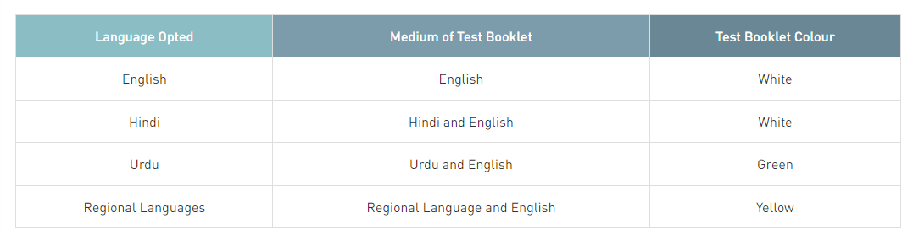

The National Eligibility cum Entrance Test (Undergraduate) or NEET (UG), formerly the All India Pre-Medical Test (AIPMT), is an all India pre-medical entrance test for students who wish to pursue undergraduate medical (MBBS), dental (BDS) and AYUSH (BAMS, BUMS, BHMS, etc.) courses in government and private institutions in India and also, for those intending to pursue primary medical qualification abroad.
The exam is conducted by National Testing Agency (NTA), which provides the results to the Directorate General of Health Services under Ministry of Health and Family Welfare and State Counselling Authorities for seat allocation.
The exam is conducted by National Testing Agency (NTA), which provides the results to the Directorate General of Health Services under Ministry of Health and Family Welfare and State Counselling Authorities for seat allocation.
NEET-UG is a single entrance test for admissions to MBBS and BDS colleges across India. NEET UG is one of the largest exam in India in terms of registered applicants.
After the enactment of NMC Act 2019 in September 2019, NEET-UG became the sole entrance test for admissions to medical colleges in India including the All India Institutes of Medical Sciences (AIIMS) and Jawaharlal Institute of Postgraduate Medical Education & Research (JIPMER) which until then conducted separate exams.
Before NEET (UG) was implemented nationwide, states conducted their own entrance tests and some prestigious medical colleges like AIIMS, JIPMER, IMS-BHU, KMC Manipal & Mangalore and CMC Vellore conducted their own entrance exams.
NEET was initially proposed to take place from 2012 onwards.[8] However, for several reasons, the CBSE and Medical Council of India deferred NEET by a year. The test was announced by the Government of India and was held for the first time on 5 May 2013 across India for students seeking admission for both undergraduate and postgraduate medicine. On 18 July 2013, the Supreme Court ruled in favor of 115 petitions and cancelled the NEET exam and announced that the MCI could not interfere with the admission process done by colleges.
Following the announcement from the Medical Council of India that it would introduce the NEET-UG exam in 2012, several states including Andhra Pradesh, Karnataka, Gujarat, West Bengal and Tamil Nadu strongly opposed the change, stating that there was a huge variation in the syllabus proposed by the MCI and their state syllabi. Even though NEET 2016 is conducted in English and Hindi, it was announced that students can write exams in Tamil, Telugu, Marathi, Bengali, Assamese and Gujarati languages from 2017 onwards. Kannada and Odia languages are added to the list so that students can write the exams in nine Indian languages and English. The Supreme Court of India quashed the National Eligibility cum Entrance Test (NEET) for admissions into all medical and dental colleges on 18 July 2013. The apex court ruled that the Medical Council of India cannot conduct a unified examination.
According to a 2013 announcement by CBSE, CBSE planned to conduct AIPMT on 4 May 2014. The final decision on NEET UG was planned to be taken after the verdict of the Supreme Court of India.
The Central Board of Secondary Education announces the results and the All India Merit List for NEET-UG. The merit list and the waiting list are prepared as per the directives of the Supreme Court of India, DGHS, MCI and DCI. The results for 2013 were announced on 5 June.
NEET was declared illegal and unconstitutional by the Supreme Court of India in 2013. However, it was restored on 11 April 2016, after a five-judge Constitution bench recalled the earlier verdict and allowed the Central Government and the Medical Council of India (MCI) to implement the common entrance test until the court decides afresh on its validity.
The All India Pre Medical Test, also known as AIPMT, held on 1 May 2016, was considered as the first phase of the NEET. Students who registered for Phase One were given a chance to appear for the next phase of NEET held on 24 July 2016, but with a condition that candidates have to give up their NEET Phase 1 score. The above dates are as per the order of the Supreme Court.
The introduction of NEET has received opposition from some entities, most notably the state of Tamil Nadu. The bulk of the major political parties represented in the state, including the AIADMK and the ruling DMK have expressed resistance to the test on multiple grounds.
➤NTA issues clarification on the medium of NEET 2023 question paper: NTA has recently released a notice explaining the allotment of the language medium of NEET test booklet.
NEET Marks vs Rank provided here indicates the marks required to secure a given NEET rank. After the release NEET UG result, of NEET 2023 will be The expected NEET marks vs rank analysis based on previous year result statistics is given below.

Students can also get an idea about the relation between marks and ranks from the table below (based on the analysis of past 2-3 years):
NTA prescribes a proper NEET dress code for male and female candidates. Candidates need to follow NEET 2023 Dress Code on the exam day to avoid any hassles. The important details of NEET 2023 Dress Code for male and female candidates are given below.
NTA will conduct NEET 2023 in 13 languages in offline mode. Candidates opting for English, Hindi, and Urdu will be allowed to select any exam city in India. If a candidate chooses to take NEET in any of the 10 regional languages, then the exam center will be allotted only in the particular state.